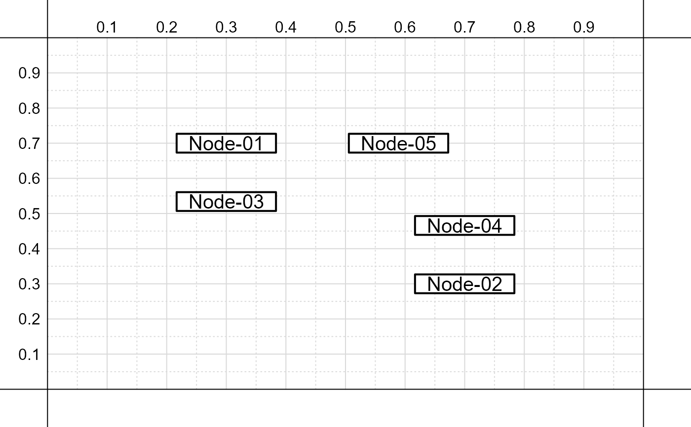

sep.RdDetermine the distance between x-axis or y-axis coordinates for two nodes in a path diagram.
sep(nodes, labels, dimension = "y-axis", desired = NULL)A list of lists, each list
giving the x and y coordinates for the
bottom, left, top, right and associated
corners for a given node (e.g., see output
of add_nodes or
add_lines_of_text).
Either...
A character vector of length 2, giving the names of the lists for the two nodes to compare;
A integer vector of length 2, giving the positions in the list of lists for the two nodes to compare.
The set of coordinates to
compare between nodes, either 'x-axis'
or 'y-axis'.
An optional value specifying the desired distance between the two nodes; when provided, the function outputs the new x or y-axis coordinate needed for the second node to have the desired distance from the first node.
# Create simple path diagram
create_base_figure()
# Add nodes
nodes <- add_nodes(
c( N1 = 'Node-01|x=.3|y=.7',
N2 = 'Node-02|x=.7|y=.3' ),
output = TRUE )
# Distance from bottom of node 'N1'
# and top of node 'N2'
sep( nodes, c( 'N1', 'N2' ) )
#> [1] 0.3464865
# Determine new y-axis coordinate for 'N2' so
# that distance between nodes would be 0.1
sep( nodes, c( 'N1', 'N2' ), desired = .1 )[2]
#> new_y
#> 0.5464865
# Add new node using proposed y-axis coordinate
add_nodes( c( N3 = 'Node-03|x=.3|y=.534' ) )
# Determine new y-axis coordinate for 'N1' so
# that distance between nodes would be 0.1
sep( nodes, c( 'N2', 'N1' ), desired = .1 )[2]
#> new_y
#> 0.4535135
# Add new node using proposed y-axis coordinate
add_nodes( c( N4 = 'Node-04|x=.7|y=.466' ) )
# Distance from left edge of 'N1' and
# right edge of 'N2'
sep( nodes, c( 'N1', 'N2' ), dimension = 'x-axis' )
#> [1] 0.2332644
# Determine new x-axis coordinate for 'N2' so
# that distance between nodes would be 0.1
sep( nodes, c( 'N1', 'N2' ), 'x-axis', desired = .1 )[2]
#> new_y
#> 0.5667356
# Add new node using proposed x-axis coordinate
add_nodes( c( N5 = 'Node-05|x=.589|y=.7' ) )
